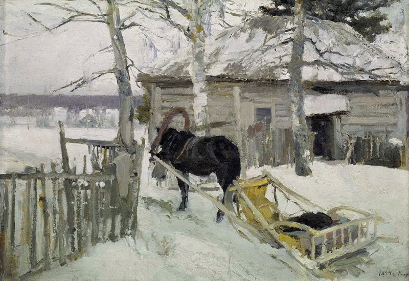

зимой

| Художник | Коровин Константин |
|---|---|
| Год | 1894 |
| Размеры | 37,2 x 52,5 см |
| Материал | Холст на картоне, масло |
Художник - Коровин Константин Алексеевич. Данная картина была написана в 1894 году. В те годы Коровин написал ряд зимних пейзажей с 1894 по 1895 годы. На картине изображена лощадь, запряженная в сани, стоящая на снегу у деревенской избы. В цветовой гамме картины преобладают различные оттенки серого и белого цветов.